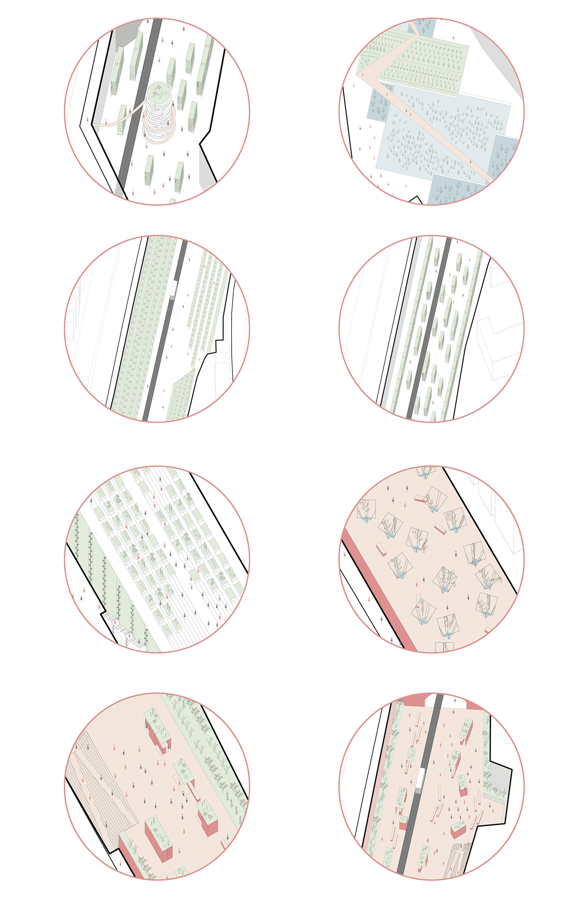

JERSEY CITY
Fall 2019
Urban design studio
"Let's farming" explores one possible future of Bergen Arches and Embankment, two abandonded railway fragments in the heart of Jersey City, as a comprehensive urban agriculture complex. Various programs and spatial forms of urban agriculture are duplicated and inserted here, making it an inclusive urban farming experiment ground. The complex includes traditional farming, vineyards, community gardens, "skyfarm", vertical farming, farmers' markets, aquaculture, and a seed library. Estimated to provide 350,000 lbs food for the city, the complex can also serve to educate the city residents about food production and build local food resiliency.
